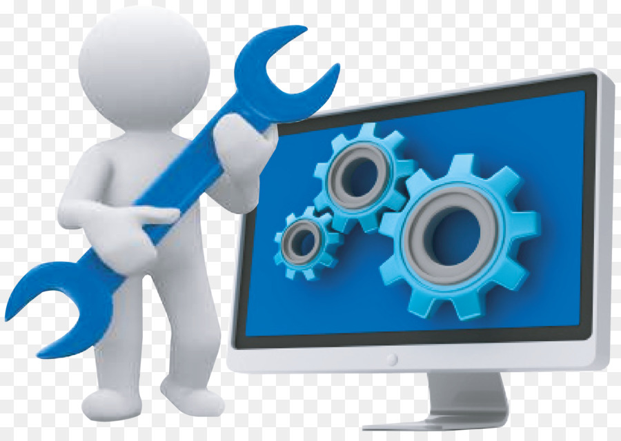

SERVICIO TECNICO DE COMPUTADORAS Y LAPTOP’S
En TI "Experts in Supports" somos especialistas en instalación, reparación y mantenimiento de equipos informáticos, impresoras, portátiles, tanto a nivel particular como de empresa. Ofrecemos servicio técnico a presencial y online, soporte tecnico de software y soporte tecnico de hardware.

MANTENIMIENTO PREVENTIVO Y CORRECTIVO
MANTENIMIENTO PREVENTIVO
Nuestro servicio consiste en realizar acciones periódicas sobre la lista de programas instalados, cuentas de usuario, medios de almacenamiento, actualizaciones del sistema operativo, el antivirus, ejecución de backups, eliminación de temporales.
Además de una limpieza interna y externa según equipo o dispositivo, limpieza de circuitos, ventiladores, teclados, ratón, pantallas, carcasas. Aplicación de silicona para proteger partes, limpiador electrónico, limpiador de pantallas, entre otros.
MANTENIMIENTO CORRECTIVO
Corrección de software que presente fallas, eliminación de software malicioso, virus o programas que impiden el funcionamiento correcto del equipo y reemplazo de piezas defectuosas. Además de una limpieza interna y externa según equipo o dispositivo, limpieza de circuitos, ventiladores, teclados, ratón, pantallas, carcasas. Aplicación de silicona para proteger partes, limpiador electrónico, limpiador de pantallas, entre otros.
REDES Y SERVIDORES
Hoy en dia las redes nos permiten compartir recursos entre varias maquinas, disminuyendo notablemente el costo de la infraestructura. Compusagma cuenta con técnicos especialistas en redes que te pueden ayudar en los siguientes aspectos:
✔Instalación y configuración de una red desde cero
✔Cableado estructurado para el armado de una red
Los servidores son de mucha utilidad para las empresas. Cumplen funciones que van desde el almacenamiento de toda la información como la administración de cada una de las computadoras a las que se encuentra conectado. Compusagma brinda soporte técnico integral para servidores, con los siguientes servicios:
✔Armado y venta de servidores a medida del cliente.
✔Instalación y configuración de servidores.
Para todo lo relacionado a redes & servidores, compusagma recomienda una visita previa de las instalaciones, así como también una consulta con el cliente, para poder determinar las necesidades. En función a esas necesidades compusagma podrá determinar la solución que el cliente requiere.
LIMPIEZA DE VIRUS INFORMATICOS
¿Salen ventanas de publicidad constantemente?, ¿Mi ordenador va muy lento?, ¿Sin saber por qué se cierran aplicaciones?, ¿Desaparecieron programas?, son los síntomas de necesitar una Limpieza de virus.
El termino Virus informático que todos conocemos es un término obsoleto, este tema ha evolucionado y evoluciona a velocidades asombrosas, hoy el término utilizado es MALWARE que engloba los programas con intenciones maliciosas que pueden afectar a nuestros equipos, de algunos de ellos todos hemos hoy hablar como:
SPYWARES /ADWARES (Recompilan información nuestra y nos muestran publicidad).
GUSANOS (Replican por nuestro ordenador y red).
TROYANOS (inofensivos en apariencia, pero por detrás se están conectando a nuestro equipo con oscuras intenciones)
Si sospecha que tienes alguno de ellos desde COMPUSAGMA S.A.C. podemos ayudarte en su eliminación, colaboramos con empresas de seguridad, como ESET, PANDA SOFTWARE, etc… Que nos facilitas herramientas técnicas avanzadas para la eliminación y detección de software malicioso y después de la eliminación podremos facilitarles las licencias necesarias para mantener sus equipos protegidos.